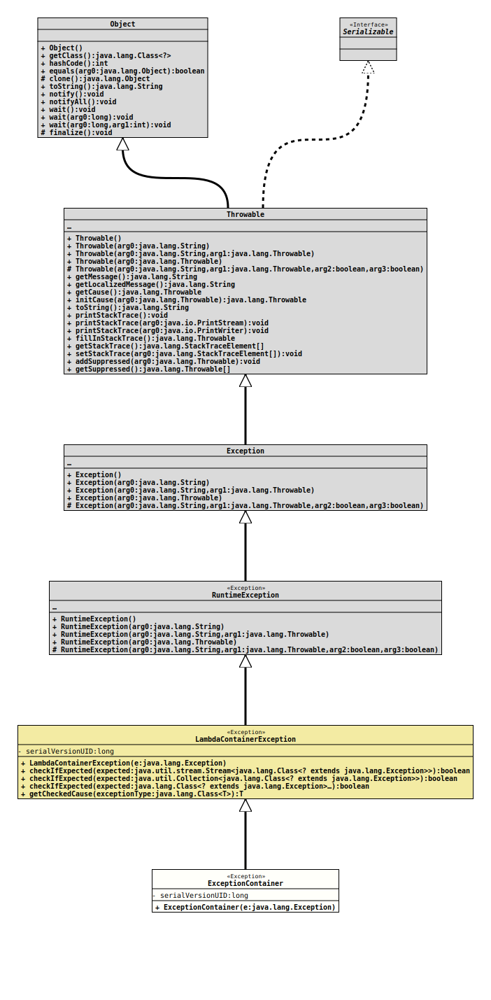

Module org.tquadrat.foundation.base
Package org.tquadrat.foundation.function
Class ExceptionContainer
java.lang.Object
java.lang.Throwable
java.lang.Exception
java.lang.RuntimeException
org.tquadrat.foundation.exception.CheckedExceptionWrapper
org.tquadrat.foundation.exception.LambdaContainerException
org.tquadrat.foundation.function.ExceptionContainer
- All Implemented Interfaces:
Serializable
@Deprecated(since="0.1.0",
forRemoval=true)
@ClassVersion(sourceVersion="$Id: ExceptionContainer.java 820 2020-12-29 20:34:22Z tquadrat $")
@API(status=DEPRECATED,
since="0.0.5")
public final class ExceptionContainer
extends LambdaContainerException
Deprecated, for removal: This API element is subject to removal in a future version.
When a method that emits a checked exception is called inside a lambda
function, this has to be caught inside that function; it is not possible
to declare that exception for the method, as long as the underlying
functional interface
have not done that already.
Unfortunately, the methods from the interfaces in the package
This class now is meant to wrap those exceptions and to allow them to bubble up to the caller:
Unfortunately, the methods from the interfaces in the package
java.util.function
do not declare any exception. So the code below is not possible:
…
Appendable appendable = …
Consumer appender = s -> appendable.append( s );
appender.accept( "…" );
…Appendable.append(CharSequence)
declares to throw an
IOException.This class now is meant to wrap those exceptions and to allow them to bubble up to the caller:
…
Appendable appendable = …
Consumer appender =
{
try
{
s -> appendable.append( s );
}
catch( IOException e )
{
throw new ExceptionContainer( e );
}
}
try
{
appender.accept( "…" );
}
catch( ExceptionContainer e )
{
throw (IOException) e.getCause();
}
…java.util.function unfortunately do not declare any
exception, this was only focused on their use with code that may emit
checked exceptions. But in fact it is a good thing that the methods in
these interfaces do not declare any exceptions, as this would have polluted
any of the APIs that make use of these functional interfaces. And using the
pattern above would be an alternative. Another would be the methods
provided in the class
Functions.- Author:
- Thomas Thrien (thomas.thrien@tquadrat.org)
- Version:
- $Id: ExceptionContainer.java 820 2020-12-29 20:34:22Z tquadrat $
- Since:
- 0.0.5
- See Also:
- UML Diagram
-

UML Diagram for "org.tquadrat.foundation.function.ExceptionContainer"
{kind=link}
-
Field Summary
FieldsModifier and TypeFieldDescriptionprivate static final longDeprecated, for removal: This API element is subject to removal in a future version.The serial version UID for objects of this class: 1L. -
Constructor Summary
ConstructorsConstructorDescriptionDeprecated, for removal: This API element is subject to removal in a future version.Creates a newExceptionContainerobject for the given exception. -
Method Summary
Methods inherited from class org.tquadrat.foundation.exception.LambdaContainerException
checkIfExpected, checkIfExpected, checkIfExpected, getCheckedCauseMethods inherited from class java.lang.Throwable
addSuppressed, fillInStackTrace, getCause, getLocalizedMessage, getMessage, getStackTrace, getSuppressed, initCause, printStackTrace, printStackTrace, printStackTrace, setStackTrace, toString
-
Field Details
-
serialVersionUID
Deprecated, for removal: This API element is subject to removal in a future version.The serial version UID for objects of this class: 1L.- See Also:
-
-
Constructor Details
-
ExceptionContainer
Deprecated, for removal: This API element is subject to removal in a future version.Creates a newExceptionContainerobject for the given exception.- Parameters:
e- The exception to wrap; cannot benull.
-
LambdaContainerExceptioninstead.